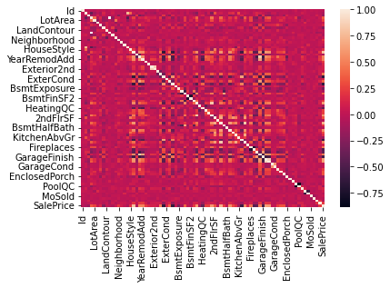
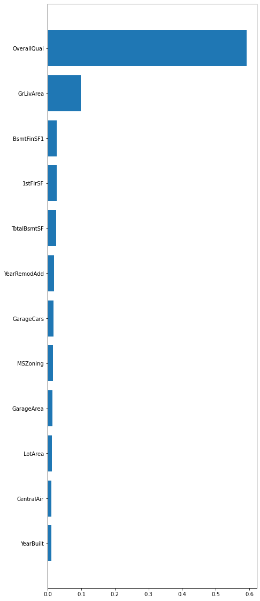

Data Import
Contents
Data Import¶
import numpy as np
import pandas as pd
import matplotlib.pyplot as plt
import seaborn as sns
from scipy import stats
from scipy.stats import norm
from sklearn import preprocessing
from sklearn.model_selection import train_test_split
from sklearn.ensemble import RandomForestRegressor
from sklearn.preprocessing import OneHotEncoder
from sklearn.metrics import mean_squared_error
from sklearn.metrics import r2_score
import tools as tool
from tools import utils as util
---------------------------------------------------------------------------
ModuleNotFoundError Traceback (most recent call last)
Input In [1], in <cell line: 1>()
----> 1 import numpy as np
2 import pandas as pd
3 import matplotlib.pyplot as plt
ModuleNotFoundError: No module named 'numpy'
data = pd.read_csv('data/House_Price.csv')
#selecting all columns that do not have numeric values
object_column = data.select_dtypes(include = ['object']).columns.tolist()
Feature Processing (Label Encoding)¶
data = pd.read_csv('data/House_Price.csv')
for column in object_column:
data = util.label_encoder(data, column)
lc_data = data
sns_plot = sns.heatmap(lc_data.corr())
fig = sns_plot.get_figure()
fig.savefig("figures/lc_data_heatmap")

threshold = 0.7
df_corr = lc_data.corr()
columns = np.full((df_corr.shape[0],), True, dtype=bool)
for i in range(df_corr.shape[0]):
for j in range(i+1, df_corr.shape[0]):
if df_corr.iloc[i,j] >= threshold:
if columns[j]:
columns[j] = False
selected_columns = lc_data.columns[~columns]
high_correlation = lc_data[selected_columns]
absolute_corr = np.abs(df_corr["SalePrice"])
df_corr["SalePrice"][absolute_corr > 0.5]
OverallQual 0.790982
YearBuilt 0.522897
YearRemodAdd 0.507101
ExterQual -0.636884
BsmtQual -0.620886
TotalBsmtSF 0.613581
1stFlrSF 0.605852
GrLivArea 0.708624
FullBath 0.560664
KitchenQual -0.589189
TotRmsAbvGrd 0.533723
GarageFinish -0.549247
GarageCars 0.640409
GarageArea 0.623431
SalePrice 1.000000
Name: SalePrice, dtype: float64
selected_columns
Index(['BldgType', 'Exterior2nd', '1stFlrSF', 'TotRmsAbvGrd', 'GarageYrBlt',
'GarageArea', 'SalePrice'],
dtype='object')
high_correlation.corr()
| BldgType | Exterior2nd | 1stFlrSF | TotRmsAbvGrd | GarageYrBlt | GarageArea | SalePrice | |
|---|---|---|---|---|---|---|---|
| BldgType | 1.000000 | -0.142748 | -0.073688 | -0.198413 | 0.200367 | -0.061421 | -0.085591 |
| Exterior2nd | -0.142748 | 1.000000 | 0.017361 | 0.068503 | 0.155058 | 0.095006 | 0.103766 |
| 1stFlrSF | -0.073688 | 0.017361 | 1.000000 | 0.409516 | 0.233449 | 0.489782 | 0.605852 |
| TotRmsAbvGrd | -0.198413 | 0.068503 | 0.409516 | 1.000000 | 0.148112 | 0.337822 | 0.533723 |
| GarageYrBlt | 0.200367 | 0.155058 | 0.233449 | 0.148112 | 1.000000 | 0.564567 | 0.486362 |
| GarageArea | -0.061421 | 0.095006 | 0.489782 | 0.337822 | 0.564567 | 1.000000 | 0.623431 |
| SalePrice | -0.085591 | 0.103766 | 0.605852 | 0.533723 | 0.486362 | 0.623431 | 1.000000 |
Log Sale Price¶
util.dist_and_prob_plot(data, 'SalePrice')
/srv/conda/envs/housetools/lib/python3.10/site-packages/seaborn/distributions.py:2619: FutureWarning: `distplot` is a deprecated function and will be removed in a future version. Please adapt your code to use either `displot` (a figure-level function with similar flexibility) or `histplot` (an axes-level function for histograms).
warnings.warn(msg, FutureWarning)

data['Log_SalePrice'] = np.log(data['SalePrice'])
util.dist_and_prob_plot(data, 'Log_SalePrice')
/srv/conda/envs/housetools/lib/python3.10/site-packages/seaborn/distributions.py:2619: FutureWarning: `distplot` is a deprecated function and will be removed in a future version. Please adapt your code to use either `displot` (a figure-level function with similar flexibility) or `histplot` (an axes-level function for histograms).
warnings.warn(msg, FutureWarning)
lc_data['SalePrice'] = np.log(lc_data['SalePrice'])
lc_data = lc_data.drop('Log_SalePrice', axis = 1)
Random Forest Model (Label Encoding)¶
lc_data = lc_data.dropna()
X = lc_data.drop(['SalePrice', 'Id'], axis = 'columns')
y = lc_data['SalePrice']
X_train, X_test, y_train, y_test = train_test_split(X, y, test_size=0.25, random_state=12)
rf = RandomForestRegressor(n_estimators=500)
rf.fit(X_train, y_train)
RandomForestRegressor(n_estimators=500)
#made a dataframe with values greater than .001 importance
#sorted the values to look better on bargraph
dataframe = pd.DataFrame(rf.feature_importances_, rf.feature_names_in_)
a = dataframe[dataframe[0] > .001]
a = a.rename(columns = {0: 'values'})
b = a.sort_values('values', ascending = True)
b.head()
| values | |
|---|---|
| ExterCond | 0.001118 |
| PavedDrive | 0.001167 |
| LotShape | 0.001196 |
| BsmtFullBath | 0.001271 |
| HeatingQC | 0.001292 |
plt.figure(figsize=(7, 20))
plt.barh(b.index, b['values'])
plt.title('Feature Importance Above .001')
plt.ylabel('Features')
plt.xlabel('Importance')
plt.savefig('figures/Top 45 Label Encoding Feature Importance)')
<BarContainer object of 45 artists>
#made another dataframe with a smaller importance threshold
dataframe = pd.DataFrame(rf.feature_importances_, rf.feature_names_in_)
c = dataframe[dataframe[0] > .01]
c = c.rename(columns = {0: 'values'})
d = c.sort_values('values', ascending = True)
d
| values | |
|---|---|
| YearBuilt | 0.010080 |
| CentralAir | 0.011582 |
| LotArea | 0.011840 |
| GarageArea | 0.013605 |
| MSZoning | 0.016032 |
| GarageCars | 0.017777 |
| YearRemodAdd | 0.018228 |
| TotalBsmtSF | 0.024533 |
| 1stFlrSF | 0.027243 |
| BsmtFinSF1 | 0.027307 |
| GrLivArea | 0.098678 |
| OverallQual | 0.592523 |
plt.figure(figsize=(7, 20))
plt.barh(d.index, d['values'])
plt.title('Feature Importance Above .001')
plt.ylabel('Features')
plt.xlabel('Importance')
plt.savefig('figures/Top 10 Label Encoding Feature Importance)')

y_output = rf.predict(X_test)
print('MSE', mean_squared_error(y_test, y_output))
print('RMSE', (mean_squared_error(y_test, y_output)**(1/2)))
print('Adj R^2 value:', r2_score(y_test, y_output))
MSE 0.00015989179376242943
RMSE 0.012644832690171484
Adj R^2 value: 0.8642769485910046
pd.DataFrame({'Type of Error':['MSE', 'RMSE', 'Adj R^2 Value'],'Value' : [mean_squared_error(y_test, y_output), (mean_squared_error(y_test, y_output))** (1/2), r2_score(y_test, y_output)]}).set_index('Type of Error').to_csv('data/LC_Error_Table.csv')